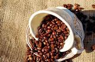
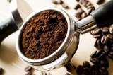

El cafe de especialidad a sido objeto de criticas en estos ultimos tiempos. Esta claro que su orientacion indirecta apunta a los sectores medios/altos, chocando con las masas populares y contra la base cultural de la cual estamos "cafetermante" acostumbrados: Un cortadito, bien caliente por favor.
La problematica se encuentra principalmente en tres factores: El precio, las recetas, la temperatura
Exigi buen cafeEl cafe al que solemos estar acostumbrados, es un cafe nocivo, torrado (azucar quemada), industrial, que no explota para nada sus propiedades y sus beneficios.
 
El grano del cafe, se encuentras dentro del fruto denominado caffeto. Se recolectan los mejores frutos a mano, se separa el grano de la pulpa en distintos procesos (beneficio, lavado) y luego se tuestan. La cadena de calidad es inmensamente distintas al cafe industrial comun.